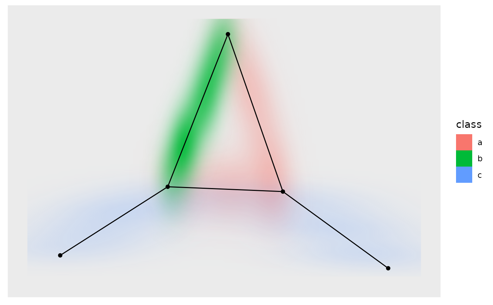

This geom makes it possible to add a layer showing edge presence as a density
map. Each edge is converted to n points along the line and a jitter is
applied. Based on this dataset a two-dimensional kernel density estimation is
applied and plotted as a raster image. The density is mapped to the alpha
level, making it possible to map a variable to the fill.
geom_edge_density(
mapping = NULL,
data = get_edges("short"),
position = "identity",
show.legend = NA,
n = 100,
...
)Set of aesthetic mappings created by ggplot2::aes()
or ggplot2::aes_(). By default x, y, xend, yend, group and
circular are mapped to x, y, xend, yend, edge.id and circular in the edge
data.
The return of a call to get_edges() or a data.frame
giving edges in correct format (see details for for guidance on the format).
See get_edges() for more details on edge extraction.
Position adjustment, either as a string naming the adjustment
(e.g. "jitter" to use position_jitter), or the result of a call to a
position adjustment function. Use the latter if you need to change the
settings of the adjustment.
logical. Should this layer be included in the legends?
NA, the default, includes if any aesthetics are mapped.
FALSE never includes, and TRUE always includes.
It can also be a named logical vector to finely select the aesthetics to
display.
The number of points to estimate in the x and y direction, i.e. the resolution of the raster.
Other arguments passed on to layer(). These are
often aesthetics, used to set an aesthetic to a fixed value, like
colour = "red" or size = 3. They may also be parameters
to the paired geom/stat.
geom_edge_density understand the following aesthetics. Bold aesthetics are
automatically set, but can be overridden.
x y xend yend edge_fill filter
The coordinates for each pixel in the raster
The density associated with the pixel
In order to avoid excessive typing edge aesthetic names are
automatically expanded. Because of this it is not necessary to write
edge_colour within the aes() call as colour will
automatically be renamed appropriately.
Other geom_edge_*:
geom_edge_arc(),
geom_edge_bend(),
geom_edge_diagonal(),
geom_edge_elbow(),
geom_edge_fan(),
geom_edge_hive(),
geom_edge_link(),
geom_edge_loop(),
geom_edge_parallel(),
geom_edge_point(),
geom_edge_span(),
geom_edge_tile()
require(tidygraph)
gr <- create_notable('bull') %>%
activate(edges) %>%
mutate(class = sample(letters[1:3], n(), replace = TRUE))
ggraph(gr, 'stress') +
geom_edge_density(aes(fill = class)) +
geom_edge_link() + geom_node_point()
#> Warning: Raster pixels are placed at uneven horizontal intervals and will be shifted. Consider using geom_tile() instead.
#> Warning: Raster pixels are placed at uneven vertical intervals and will be shifted. Consider using geom_tile() instead.
